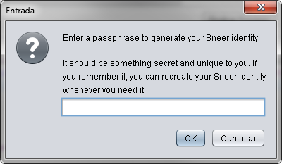

Getting Started
Using Sneer with others is more fun. Call a friend to try it out with you.
» Downloading
-
This will download Sneer source code, documentation and launch Sneer.
You can access the documentation from within the Sneer main menu.
Automatic installation:
or
Manual installation: Sneer
(requires Java 6 Webstart).
You will be prompted for a secret passphrase. It should be more than 30 characters long and unique to you, for example: your childhood phone number followed by a verse from your favorite song.

Congratulations, you now have a sovereign seal! You can publish it so that other people can connect to you securely.
Enter your name in the "Own Info" screen that will appear and you're done.
» Adding a Friend
» Sharing Music Tracks
» Uninstalling